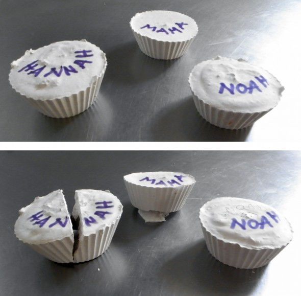

Hemos llenado con yeso unos moldes de silicona, y después hemos enterrado una semilla distinta en cada uno. Cuando el yeso se seca y la semilla ha chupado bastante agua, el brote tiene suficiente fuerza para romper el yeso. Increíble!...¡Hannah ha ganado!